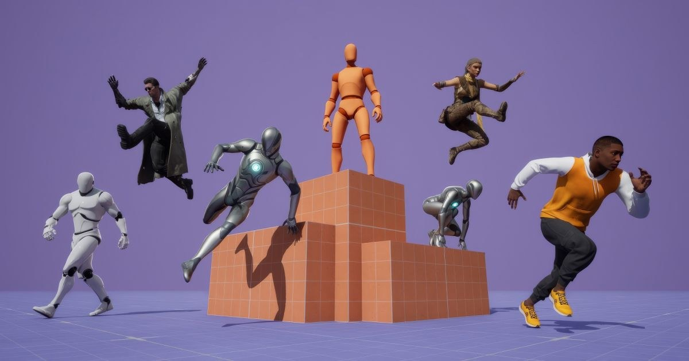

Game Animation Sample 升級 UE5.8：Physics Control、Motion Matching、Chooser 與 Smart Objects
Epic 更新 Game Animation Sample，加入 Physics Control Component/Asset、Chooser 內多 Pose Search DB、Blend Spaces 與 Smart Object 互動範例，適合直接做 gameplay animation baseline。

動畫 ★★★★★
完整分析
動畫流程
UE5.8 sample 把 Physics Control、Chooser、Motion Matching、Blend Space 與 Smart Object 互動放進同一套可下載範例。
Production 價值
比單看文件更適合做團隊 baseline，可直接拆解 locomotion、ragdoll、interaction 與 selector responsibility。
導入測試
挑現有角色替換 sample skeleton，測 motion matching DB、slope blend、physics profile 與 Smart Object 互動的 retarget 成本。